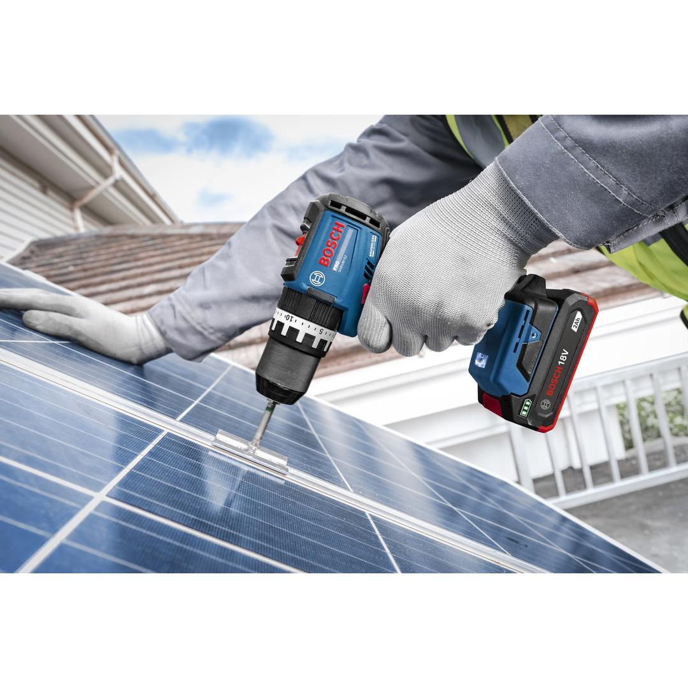
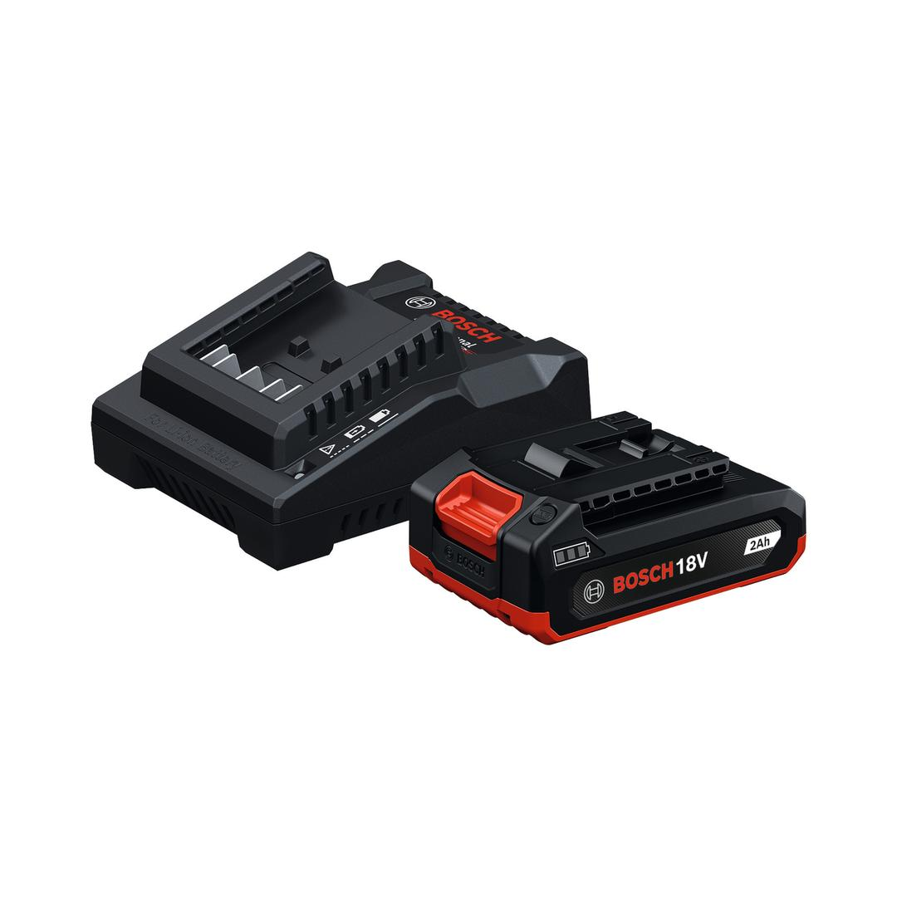

1600A03C0H




| Battery charging voltage |
18 – 18 V |
| Charge current |
2.0 A |
| Charger weight |
0.333 kg |
Compact and lightweight 18V 2.0Ah battery pack
Up to 550W maximum power (based on internal lab testing instantaneous maximum power with a fully charged new battery) Lightweight and compact: makes work easy in all positions, especially overhead Robust and durable: to withstand drops and harsh working conditions One battery fits all: compatible with the Bosch Professional 18V System and the multi-brand battery alliance AMPShare
The GBA18V-20 is the most compact and lightweight battery, delivering up to 550W of maximum power (based on internal lab testing; instantaneous maximum power with a fully charged new battery). Its compact design ensures greater comfort when working in all positions, especially overhead. With a robust build, this battery is more durable and can withstand drops and harsh working conditions.
The GBA18V-20 is a lithium-ion battery pack featuring a 3-LED fuel gauge that displays the state of charge. Compatible with the Bosch Professional 18V system and the multi-brand battery alliance AMPShare.